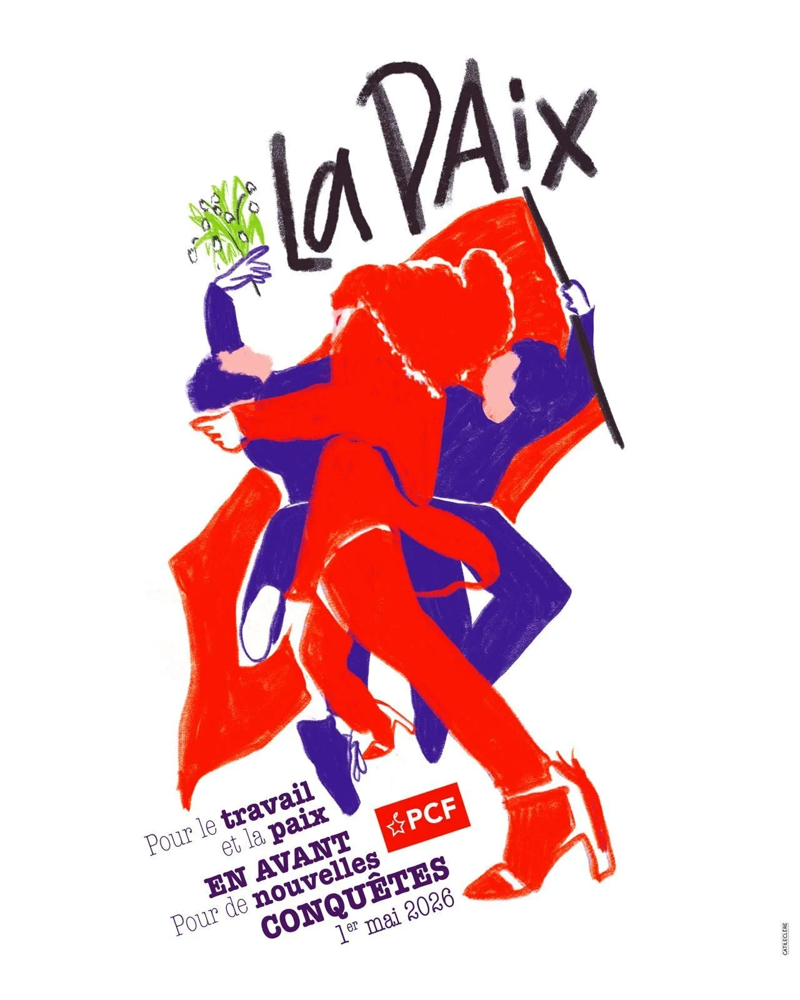

Publication relayée par le PCF 79
Le PCF place la paix au cœur de son appel au 1er mai
Date de mise à jour indiquée par Facebook · 29 avril 2026
Texte de la publication · PCF national
🕊 Le 1er mai, une exigence claire : la paix.
Paix contre les logiques de guerre et de profits.
Paix pour que l’argent aille aux salaires, aux services publics, à la vie digne, pas aux armes.
🚩 Par l’unité de classe, travailleurs, travailleuses, jeunes, retraités, ici et partout, imposons le combat pour nos droits et un avenir de justice sociale.
La paix et le progrès n’attendent pas, ils se conquièrent.
Toutes et tous dans la rue le 1er mai !

Sources
PCF national · publication relayée par le PCF 79 · bibliothèque Facebook · AR-0002-FB-00798
À lire aussi · Fabien Gay défend le 1er Mai chômé